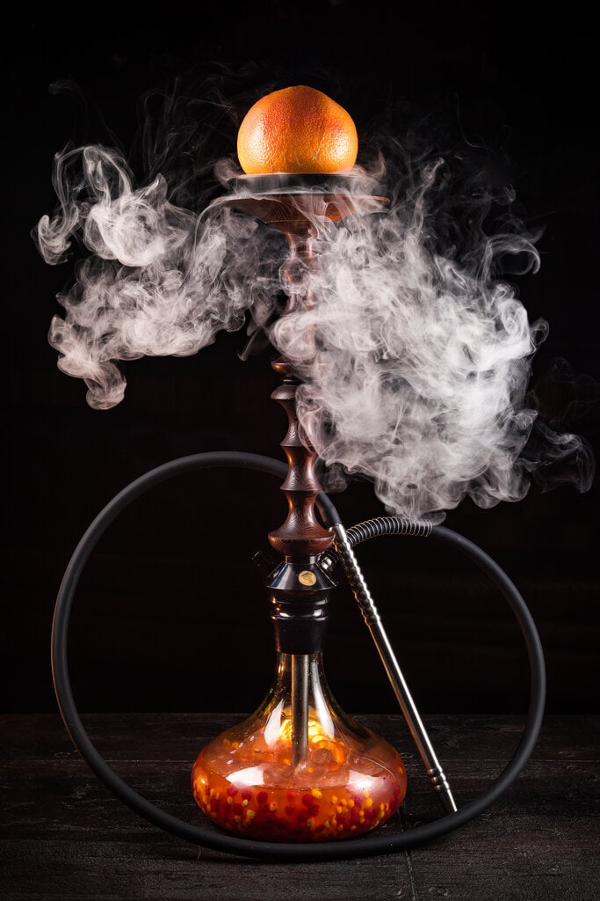

"Не верь всему, что говорят"
Стереотипы и мифы окружают нас повсюду и наш дымный друг тоже жертва подобных заблуждений. Рассказываем чему можно верить, а чему нет. Кальян вреднее ста сигарет
Очень популярный миф, основанный на том, что курение кальяна достаточно продолжительное, нежели сигаретный перерыв от дел. Но тут на помощь всем испугавшимся любителям подымить приходит наука. Исследования показали, что наибольшее содержание никотина в крови курящего кальян наступает после 45 минут, аналогичный уровень у человека, который только что выкурил сигарету. Ни о каких ста и речи быть не может.
Кальянный дым вреднее сигаретного
Снова не верно. Как минимум в кальянном дыме практически отсутствуют смолы. Так как процесс горения табака при курении кальяна не начинается, скорее это можно назвать тлением, чего, как вы понимаете, недостаточно для образования смол. Всё дело в температурном режиме, чаша греется примерно на 250 градусов, когда как сигарета горит на всех 900.
Так же в кальяне предусмотрено несколько фильтров. Это сама шахта, задерживающая возможные вредные выделения и, конечно, вода в колбе, которая сама по себе является превосходным природным фильтром.
Ещё один плюс в копилку кальянного табака можно добавить его более натуральный состав, который, как правило, сводится всего к трём ингредиентам: пищевые глицерин и ароматизаторы, иногда красители. В сигаретах же просто кошмар. По некоторым исследованием количество веществ в одной сигарете может достигать 800-та наименований. Причем это могут быть бензол, фенол, иногда даже селитра. Только представьте себе, что вдыхает курильщик сигарет.
Глицерин смертельно опасен
Вот с этим сложно не согласиться. При воздействии высоких температур он образует акролеин – крайне неприятное вещество. Однако любителям кальяна оно не грозит. Мы уже говорили о температурном режиме, и 250-ти градусов явно не хватит для образования акролеина, а значит, серьезной опасности здоровью нет, но и полной безопасности тоже. Побочные действия так же возможны, так что следует всегда быть осторожным и прислушиваться к своему здоровью. Вейп безопаснее кальяна
Ещё одно популярное заблуждение. Если в кальянном табаке можно более-менее быть уверенным и понимать, что находится в чаше, то с жидкостями для вейпа всё сложнее. Во-первых, содержание глицерина намного больше. Во-вторых, в жижах с никотином, находится синтетическая версия этого самого никотина. Насколько это вредно ещё неизвестно, но в данном случае - не может искусственное быть лучше натурального.
Кальян – это не гигиенично
Если подумать, то в нашей жизни много чего не гигиенично. Поздороваться за руку, держаться за поручень в общественном транспорте, половая жизнь и ещё миллион очень “опасных” дел. Ко всему нужно подходить с головой и кальян тут не исключение. Гигиена это личная забота каждого